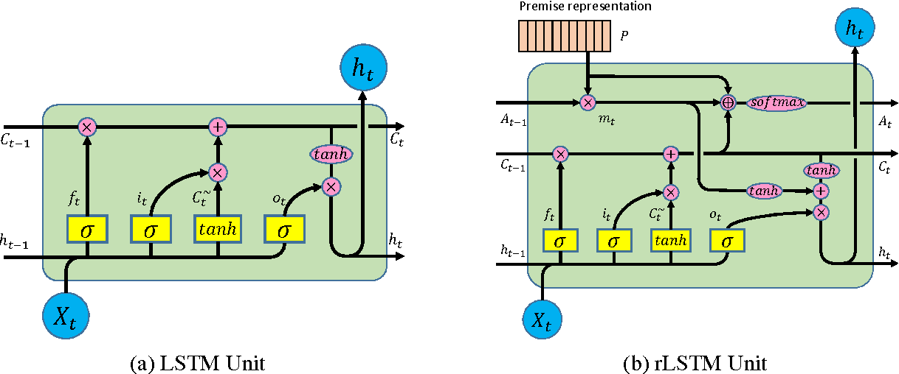

Recurrent Neural Network Music Generation
Historically music has always been an integral component of human life and interaction. Music has always been something innate to people and has served a powerful role in conveying powerful abstract emotions that humans often times have a difficult time dissecting. At the same time, peeling back the layers of a musical piece reveals that it is afterall just a sequence of notes strung together with some constraints such as key and time measure. The problem statement and motivation provides insight into why this topic is being explored and what fruit it actually can bear. We then move on to the methods we implemented in order to solve our problem. What we hope to achieve by the end of this paper is, given sequences of musical pieces in musical instrument digital interface (MIDI) format, is it possible for a long short-term memory (LSTM) to be trained over several epochs to learn to generate a unique sequence of notes, we explore an LSTM implementation for both ABC-notation and midi formats for input into our network and discover interesting strengths of both methods. We utilize an LSTM because it must have the ability to learn past of its ability to remember from past time steps in the network. After describing our methods we move on to discussing our results both in the actual turnout of our audio generation as well as plots describing loss and accuracy of our model during training. Finally, we discuss related works and limitations in our last portion, which pertains to implementations and ideas within a similar scope that have been done as well as limitations to the general goal of utilizing LSTMs to generate sequences of notes.